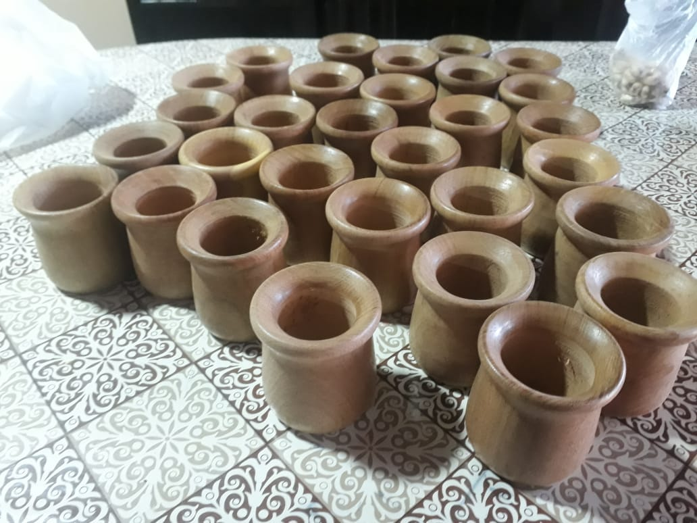
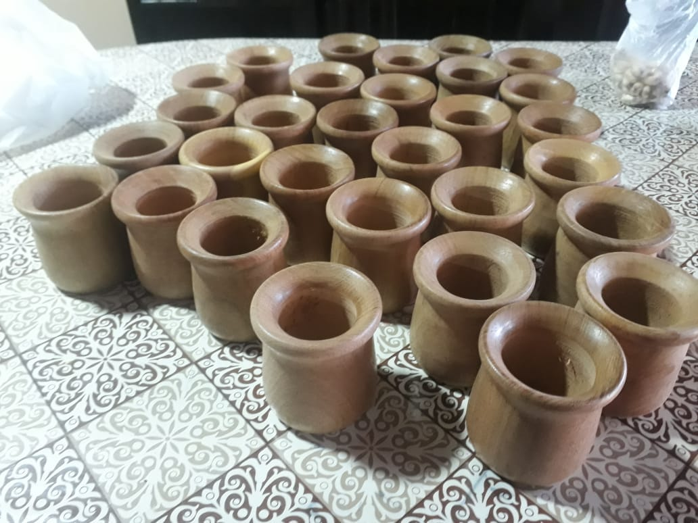
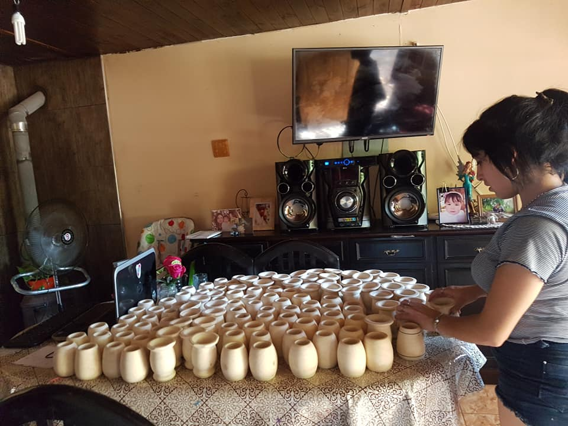

Algarrobo
El algarrobo es la madera ideal para un buen mate duradero y resistente al calor y a golpes.
El algarrobo es la madera ideal para un buen mate duradero y resistente al calor y a golpes.

la canela blanca ofrece un hermoso color claro para resaltar los dibujos, ideal para lapiceros o macetas peueñas. No se utilizan como mates por su baja resistencia al calor.
